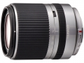

器材库 > APS画幅镜头 > 14-150/3.5-5.8 Di III (C001)

详细规格
发布日期
2014-06-19
厂家推荐价格
65,000.00 （日元）
焦距
14mm-150mm
等效35mm画幅焦距
28mm-300mm
最大光圈
f/3.5-5.8
最小光圈
f/22
视角（对角）
75°22‘~8°15’
镜头结构
17片/13组
非球面镜片
3片
低/超低色散镜片
1片
光圈叶片
7片
最近对焦距离
50cm
最大放大倍率
约0.26倍
滤镜口径
52mm
镜头卡口
Micro 4/3
防抖
否
颜色
银色, 黑色
尺寸
80.4×63.5mm
重量
285g
附件
花瓣形遮光罩
该产品暂无存档的网友点评